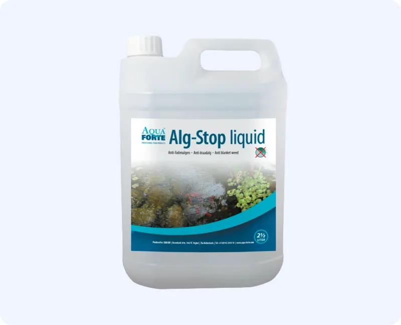

Биопрепараты
Средство против водорослей ALG-STOP, 5л, для пруда до 50000л
Цена и наличие
- 1 шт.512,01 BYN / шт.В наличии
Данные на 23.11.2026.
Характеристики
- Размер емкости
- 5 л
- Для прудов макс. объемом воды
- до 50000 л
- Назначение
- Против водорослей
- Производитель
- Aqua Forte
- Страна
- Голландия
Описание
Активный ингредиент препарата для водоема Alg-Stop упакован в оболочку, которую водоросли активно поглощают.
СРЕДСТВО ПРОТИВ ВОДОРСЛЕЙ В ПРУДУ ALG-STOP 5Л, ДЛЯ ПРУДА 50М3 Активный ингредиент препарата для водоема Alg-Stop упакован в оболочку, которую водоросли активно поглощают. Alg-Stop, таким образом, блокирует дальнейшее развитие и рост водорослей. Alg-Stop проникает в структуру водорослей и разрушает их изнутри. Препарат не выводит питательные вещества из воды, но делает их недоступными для водорослей. Дополнительно, средство снижает уровень фосфатов до минимальных значений. Alg-Stop не содержит соединений аммония или солей металлов. Alg-Stop быстро растворяется в воде, поэтому водоросли практически мгновенно поглощают его. Alg-Stop идеально подходит для плавательных прудов. Не используйте Alg-Stop в сочетании с другими средствами борьбы с водорослями, активированным углем, нитратной смолой и озоном. Для эффективного использования проверьте значения воды перед применением Alg-Stop: значение GH (оптимальное 12, минимум 6), значение KH (оптимальное 8, минимум 4). Повторите тест после сильного дождя или замены воды. Удвойте дозировку для водоемов с большим количеством водорослей или для зон мелководья, где вода активно прогревается. Перед применением необходимо проконсультироваться со специалистом.
Применение и дозировка
Применение и дозировка порошка (жидкости): В первый месяц используйте 100 г (100 мл) на 3,0 прудовой воды каждые 10 дней. Для профилактики добавьте 100 г (100 мл) на 3,0 м3 не реже одного раза в месяц. Регулярно удаляйте отмершие водоросли из водоема и фильтра.
Пример использования
Пример использования порошка (жидкости): 1,0 м3; прудовой воды = 0,4 кг (л) в сезон (0,5 кг (л) включая стартовую дозировку); 5,0 м3; прудовой воды = 2,1 кг (л) в сезон (2,6 кг (л) включая стартовую дозировку); 10 м3; прудовой воды = 4,2 кг (л) в сезон (5,2 кг (л) включая стартовую дозировку); 25 м3; прудовой воды = 10,8 кг (л) в сезон (13,0 кг (л) включая стартовую дозировку);